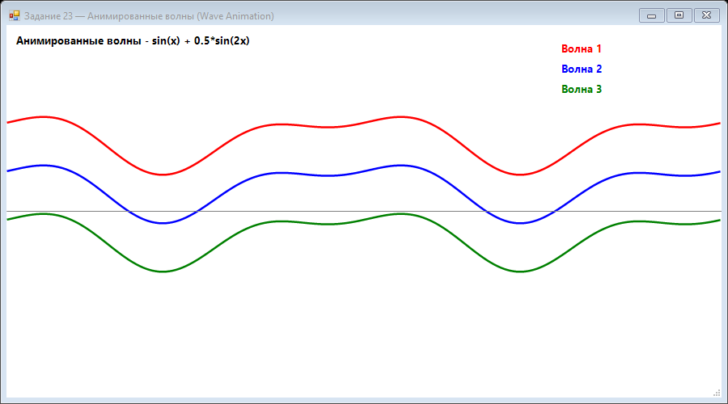

Урок 8.3: Волновая анимация
Построение волны
Волны задаются синусоидой, где x — позиция, a — амплитуда, f — частота, t — время.
float y = (float)Math.Sin(x * frequency + time) * amplitude;
e.Graphics.DrawLine(pen, x, centerY + y, x + 1, centerY + nextY);Интерференция
Несколько волн с разными частотами создают интересные динамические эффекты.
📝 Пример задания — волновая анимация
Три волны рисуются разными цветами и смещены по вертикали. Каждая волна — суперпозиция двух синусоид: sin(x + t) + 0.5*sin(2x + 0.5t):
using System;
using System.Collections.Generic;
using System.Drawing;
using System.Drawing.Drawing2D;
using System.Windows.Forms;
namespace CSharpGraphicsApp
{
public class Task23_WaveAnimation : Form
{
private float time = 0;
private readonly Timer timer = new Timer();
private int waveCount = 3;
public Task23_WaveAnimation()
{
Text = "Задание 23 — Волновая анимация (Wave Animation)";
Size = new Size(900, 500);
BackColor = Color.White;
DoubleBuffered = true;
Paint += Form_Paint;
timer.Interval = 16;
timer.Tick += (s, e) => { time += 0.05f; Invalidate(); };
timer.Start();
FormClosed += (s, e) => timer.Stop();
}
private void Form_Paint(object sender, PaintEventArgs e)
{
e.Graphics.SmoothingMode = SmoothingMode.AntiAlias;
e.Graphics.Clear(Color.White);
int centerY = ClientSize.Height / 2;
int width = ClientSize.Width;
float amplitude = 30f;
Color[] colors = { Color.Red, Color.Blue, Color.Green };
for (int w = 0; w < waveCount; w++)
{
var points = new List<PointF>();
for (int x = 0; x < width; x += 2)
{
float nx = (float)x / width * 4 * (float)Math.PI;
float y = (float)Math.Sin(nx + time) * amplitude;
y += (float)Math.Sin(nx * 2 + time * 0.5f) * amplitude * 0.5f;
float offset = (w - waveCount / 2f) * 60;
points.Add(new PointF(x, centerY + y + offset));
}
if (points.Count > 1)
using (var pen = new Pen(colors[w % colors.Length], 2.5f))
e.Graphics.DrawLines(pen, points.ToArray());
}
e.Graphics.DrawLine(Pens.LightGray, 0, centerY, width, centerY);
var font = new Font("Segoe UI", 10, FontStyle.Bold);
e.Graphics.DrawString("Волны: sin(x+t) + 0.5·sin(2x+0.5t)",
font, Brushes.Black, 10, 10);
int lx = width - 150;
for (int i = 0; i < waveCount; i++)
e.Graphics.DrawString($"Волна {i + 1}", font,
new SolidBrush(colors[i]), lx, 20 + i * 25);
}
}
}Практическое задание
- Нарисуйте несколько синусоидальных волн.
- Добавьте анимацию времени.
- Измените амплитуду и частоту.
- Добавьте легенду с цветами для каждой волны.
Задание по аналогии: Волновая анимация
По аналогии с Task23_WaveAnimation реализуйте анимированные волны с интерференцией.
- Добавьте поле
float time = 0иTimerс Interval = 16 мс. ВTimer_Tickувеличивайтеtime += 0.05fи вызывайтеInvalidate(). - В
Form_Paintдля каждой волны создавайте список точекList<PointF>: перебирайте x от 0 до width с шагом 2, вычисляйтеnx = x / width * 4π. - Рассчитайте y как суперпозицию двух синусоид:
sin(nx + time) * amplitude + sin(2*nx + time*0.5) * amplitude * 0.5. - Смещайте каждую волну по вертикали:
offset = (w - waveCount/2) * 60. Рисуйте черезDrawLinesпером нужного цвета. - Добавьте легенду: в правой части формы выводите название волны нужным цветом через
DrawString.
Пример результата выполнения задания:

Скриншот программы (Task23)
💡 Совет: Сделайте шаг по x равным 2 (а не 1) — это вдвое снижает число точек без заметной потери качества и ускоряет
DrawLines.
Проверка
Каким образом увеличение частоты меняет форму волны? Почему одна волна может проходить сквозь другую?